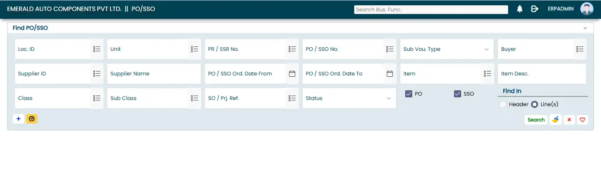
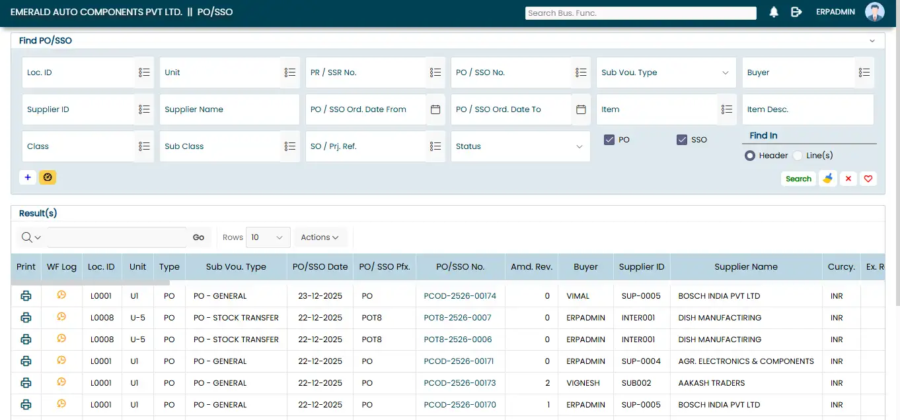

<div data-category="Operating Instructions" data-title="How to use Search screen" data-updated="December 01, 2025" data-contributors="RoadmapIT" data-breadcrumb="Home,Operating Instructions,How to use Search screen">
  <div class="page-content">
    
    <!-- Search Screen Usage -->
    <h2>How to use Search screen:</h2>
    <ul style="list-style-type: none; align-content: center">
      <li class="mouse-icon">Find screen displays the list of Purchase Orders with the relevant details and status.</li>
      <li class="mouse-icon">Click on Search to filter all the records.</li>
    </ul>
    
    <ul style="list-style-type: none; align-content: center">
      <li class="mouse-icon">User can filter the respective documents by entering the search parameters at the header.</li>
      <li class="mouse-icon">On clicking Search, the system displays results relevant to the entered search parameters.</li>
      <li class="mouse-icon">Using the clear icon, entered search parameters can be cleared.</li>
      <li class="mouse-icon">To close the screen, use the close icon.</li>
    </ul>
  </div>
</div>
